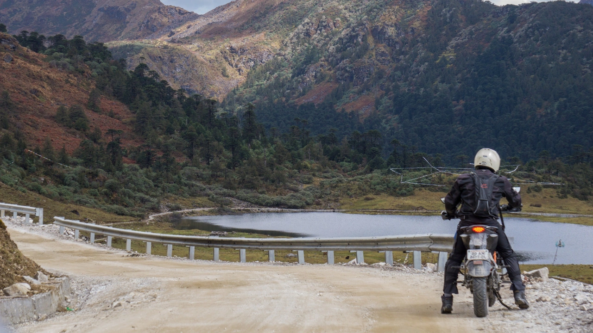
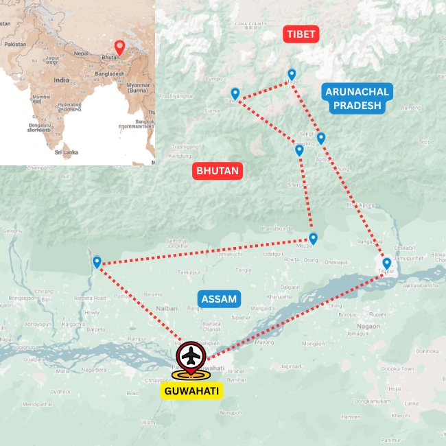

Tours
Motorcycle & Overland · Western Arunachal
Motorcycle Tour of Western Arunachal Pradesh
High roads of the Monyul
Overview
A high-road motorcycle journey into the Monyul region of Western Arunachal Pradesh
This motorcycle and overland journey travels from the foothills of Assam into western Arunachal Pradesh—a spectacular region of high mountain passes, deep river valleys, Buddhist monasteries and remote Himalayan roads. The changing landscapes and riding conditions make it one of Northeast India’s most rewarding overland adventures.
The route enters the historic Monyul region, home to Monpa, Sherdukpen and Brokpa communities whose cultural and religious connections extend towards Bhutan and Tibet. Beginning in the warm plains of the Brahmaputra Valley, the journey gradually climbs through subtropical forests, mountain settlements and high ridges before entering the dramatic alpine country of the eastern Himalayas.
Road conditions change constantly with altitude, weather and ongoing construction. Assam’s flatter highways gradually give way to winding mountain roads, steep climbs, broken sections and occasional jeepable tracks. This variety adds a genuine sense of expedition to the journey and requires flexibility from both riders and drivers.
The tour can be organised as a guided motorcycle expedition or a supported overland journey in suitable vehicles. Designed for adventurous travellers, it combines challenging roads and extraordinary Himalayan scenery with monasteries, remote communities and the distinctive Buddhist cultures of western Arunachal Pradesh.
Tour Details
Route character

Journey Flow
The tour in sections
This is an indicative flow. The final route is shaped around your dates, pace, group profile and local conditions.
Assam foothills
Start with the flatter roads of Assam, moving through tea country, river plains and the forested edges below the Eastern Himalayas.
Entering the Monyul
Climb into Western Arunachal through changing road conditions, mountain settlements, monasteries and cultural landscapes shaped by Bhutan and Tibet.
High roads to Tawang
Ride into the high country around Tawang, with passes, lakes, stark mountain scenery and some of the most dramatic roads in the eastern Himalayas.
Detailed itinerary
Ask for the full route plan and cost
The itineraries are unique, so the detailed route and cost are shared directly after understanding your dates, pace and group size.
Photo Gallery
On the Western Arunachal route
Enquire
Plan the Motorcycle Tour of Western Arunachal Pradesh
Share a few details and we will get back to you with the best route, duration and cost options.